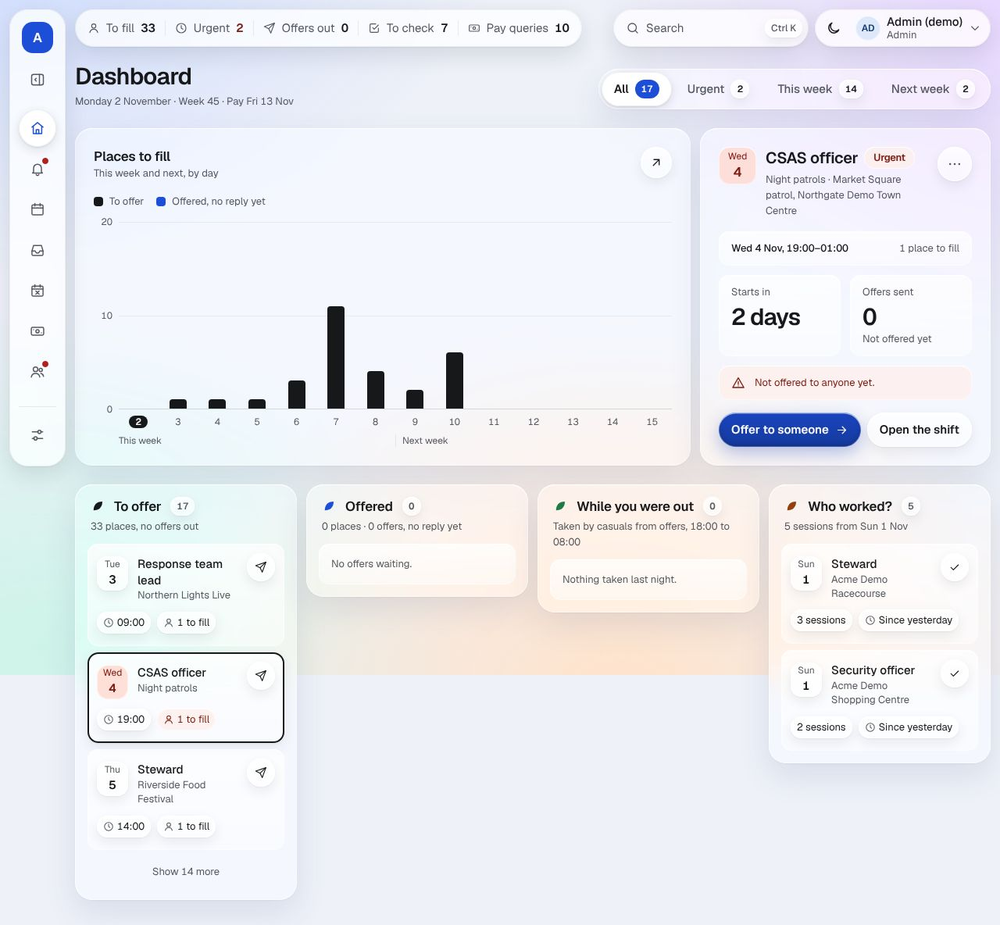
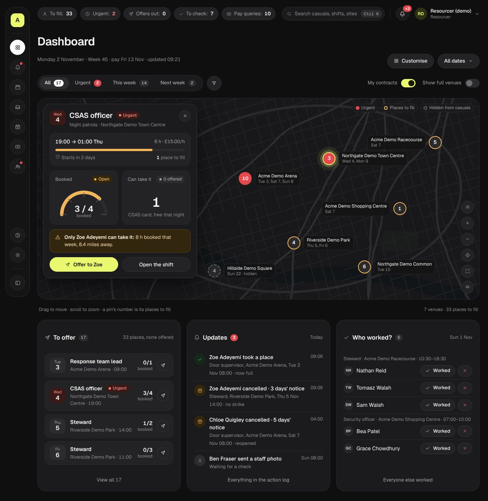

THE OFFICE · BEFORE THE BUILD · MON 2 NOV 2026
Before the build: the office audit
You asked three things before I build round 8: how the map and charts will use real data, how the proposed screens compare with what's live today, and what Parim does better. Each answer is below, with the measurements, followed by 16 changes I recommend. Those 16 are now on the changes page, where you can mark each Build or Drop.
In short
The map and every chart use figures the app already records. Before they can be built, five things are needed: map tiles, a clients list for contracts, office notifications, pages that update themselves, and 12 weeks of made-up history for the demo.
Round 8 is a big step up in layout. The Arena's page goes from 6.3 screens of scrolling to 1.2. Three things measured on the mock-ups need fixing first: a red that's too light behind white text, text as small as 9.5px, and too many sizes and colours.
Today's office passes on accessibility, and the build must keep that. None of 1,378 text samples failed contrast. Its weak points: 23 buttons on one page share the same name, and an open page never picks up a casual's cancellation by itself.
Parim does more around the shift itself: clock-in, reconfirming before a shift, and a scheduling grid. ShiftDesk does better when a gap needs filling: instant booking, licence checks that block an offer, strikes, a two-way shifts line and no passwords. I'm taking one Parim idea into round 8 and parking six for later.
How the map and charts get real data
Nothing on the round 8 screens is invented. Each picture is a query on data the app already stores, worked out in code, never by AI (golden rule 1). Below is where each one's numbers come from, whether the data exists today, and what has to be built.
Venue map Data ready · map to add
- Shows
- A pin for each venue with sessions in the next 7 days, showing its places to fill. Red if a session there is urgent, amber if open, green if full.
- From
- Each venue's latitude and longitude (
sites.lat,sites.lng), set from its postcode when the venue is saved in Settings or sent by the planner. Counts come from the sessions and their bookings. - Needs
- MapLibre (a free, open-source map library) and map tiles. I recommend one UK map file on our own server: there's no charge per view, and no viewer's location goes to a map company. "© OpenStreetMap contributors" shows on the map.
- Demo
- The demo's venues have made-up "ZZ" postcodes, and the fake geocoder places them around a point near Leeds. For the demo they need believable spots: made-up venues in real towns, with no real employer data.
Session card on the map Ready
- Shows
- The most urgent session with places open: the role, the time, how many are booked, who's been offered it, who's interested, and the best casuals to offer it to next.
- From
- The sessions, offers and requests tables. "Best next" comes from the eligibility rules (licences in date, no clash, travel buffer) and the firm's allocation mode, the same code that sends offer waves.
- Needs
- Only the new drawing: the session pages read the same tables today.
Staffing layout on an event's page Ready
- Shows
- Every place that day, grouped by role: booked (and who), open, urgent or cancelled.
- From
- That event's sessions, their headcounts and their bookings, including any cancellation and its notice hours.
- Needs
- Only the new drawing.
Cancellations and no-shows charts Ready
- Shows
- Cancellations per week, with the short-notice ones marked, and no-shows per week.
- From
- The nightly count (
metrics_daily, at 00:30, recounting the last 7 days):worker_cancellations,firm_cancellations,short_notice_cancellations(under the firm's own threshold) andno_shows. Today's bar is counted live from the bookings. - Needs
- The chart and the "today" query.
Fill rate per contract Needs contracts
- Shows
- The share of places booked by the time each session started, for each contract.
- From
- Sessions' headcounts against the bookings in place at their start time, added up per client.
- Needs
- A clients table (decision 1: a client owns one or more venues) and a new figure in the nightly count, so a week's rate doesn't have to be recounted each time a page opens.
Reliability per casual Data ready · rule to write
- Shows
- A figure and labels: Regular, Reliable, Cancels often, Not worked lately.
- From
- Each casual's bookings over the last 90 days, as decided: worked ÷ (worked + no-shows + cancellations under 48 hours). These come from the booking statuses (
completed,no_show,cancelled_workerwith its notice hours), with strikes beside them. - Needs
- A new rule in plain code with its tests. It's only as good as "Who worked?": a session nobody marks never counts as worked or as a no-show.
Updates feed and the bell's count Data ready · "seen" to add
- Shows
- Cancellations, strikes, failed offers, refused bookings, uploads to check and new enquiries, newest first.
- From
- The action log (
events, which is append-only). It already records over a hundred kinds of entry, each written as it happened. - Needs
- A small table recording how far each office user has read, so the bell's count goes down once you've seen them.
Phone and desktop notifications New
- Shows
- Cancellations under 48 hours, and places still open 6 hours before start (decision 5).
- From
- The same log entries as Updates. An hourly email that combines the office's alerts already exists.
- Needs
- Web push for office users. Today only casuals can subscribe (
push_subscriptions.worker_idis required), so this needs a schema change, plus the push keys (VAPID) set on the live server. Web push is off on the demo today.
My contracts and my dashboard New
- Shows
- Only the clients you've picked, and the cards and charts you've ticked.
- From
- Clients (new) → venues → sessions, and a saved layout for each office user.
- Needs
- Two new tables, each with its tenant rules and isolation tests. Each one goes to you for approval first, because it changes the schema.
Keeping the page up to date Missing today
- Today
- An office page updates only when you do something on it, move to another page, or reload. Nothing checks for changes made by casuals or the planner, so a cancellation at 10:41 isn't on a dashboard you opened at 10:30.
- Needs
- A fresh fetch every 30 seconds while the tab is showing, and again as soon as you come back to it, with "Updated 10:42" in the title row. The demo phone already does this (
src/app/demo/auto-refresh.tsx), so it's a small change. Instant updates over a live connection can come later.
The demo needs history. The demo's story has six events and a few past sessions, enough for Kieran's strikes and the cancellations. That isn't 90 days of work, so reliability would show "not enough shifts" for everyone and the charts would be almost empty. I recommend a made-up 12 weeks of worked sessions, cancellations and no-shows, seeded alongside the story so the walkthrough's lists stay exactly as they are.
Today's office against round 8, measured
The same seven screens, measured with the audit probes at 1280px and 390px (14 views each): today's live demo, logged in as the admin, and the round 8 mock-ups. Round 8 is still a set of pictures, so anything about buttons can't be measured on it yet.
| Measure | Today (live) | Round 8 (proposed) | Aim for the build |
|---|---|---|---|
| Text that fails contrast (WCAG 1.4.3) | 0 of 1,378 | 17 of 972all one red, #e5484d, 3.91:1 | 0 |
| Smallest text | 12px | 9.5pxand 10, 10.5, 11, 11.5px | 12px |
| Font sizes on the dashboard | 6 | 14 (15 on a phone) | 7 |
| Text colours on the dashboard | 6 | 13 | 6 |
| The Arena's page, laptop | 6.3 screens, 141 controls | 1.2 screens | as round 8 |
| The Arena's page, phone | 7.0 screens | 2.3 screens | as round 8 |
| Dashboard, phone | 2.8 screens | 3.0 screensthe map adds 300px | about 3 |
| Buttons sharing one name (the Arena's page) | 23 "Assign someone", 23 "Change or cancel", 5 "Offer a place" | not drawn yet | 0 |
| Filled buttons competing on the dashboard | 3 | 1 (hi-vis) | 1 |
| Controls in the dashboard's first screen (laptop) | 32 | a picture, can't count | fewer |
| Updates while the page is open | No: only after your own action or a reload | not shown | every 30 s |
| Faint text on glass, over the brightest street line | no glass | 4.93:1 | 4.5:1 or more |
Round 8: fix in the design before building
White text on round 8's red is 3.91:1, under the 4.5:1 minimum.
Strike badges and the bell's count are what an office person most needs to read at a glance, and they're the ones that fail.
"+3" (bell) ×7 · "Strike 1 issued" ×4 · "Strike 2 issued" ×2 · "2 live strikes" ×2 · "10" ×2 #ffffff on #e5484d = 3.91:1 → #ffffff on #d13438 = 4.93:1 (and 3.94:1 against the page, above 3:1)
Fix: fill badges that carry white text with #d13438. Red text on dark keeps #ff8a80, which is 6.86:1.
Round 8 uses text as small as 9.5px, and 40 bits of text on the dashboard are under 12px.
Office staff read this all day on laptops set to 150%. The smallest text today is 12px.
dashboard (laptop): 11px ×15 · 11.5px ×14 · 10.5px ×6 · 10px ×5 the Arena's page: 9.5px ×7 (initials in the 24px avatars) · 11px ×13 · 11.5px ×13
Fix: use one scale of 12, 13, 14, 16, 20, 24 and 30px, with nothing under 12px. The initials in the staffing tiles go up to 12px; they still fit the 24px circle.
Round 8 has 14 font sizes and 13 text colours on the dashboard; today's office has 6 and 6.
Half-pixel steps can't be told apart by eye, but each one makes the page look slightly off. A short list of sizes and colours is a big part of what makes Haulix look calm.
sizes: 14 ×103 · 13 ×32 · 12.5 ×29 · 12 ×18 · 11 ×15 · 11.5 ×14 · 16 ×10 · 10.5 ×6 · 10 ×5 · 13.5 ×4 · 30 · 19 … colours: #f4f4f3 · #8c8c91 · #a2a2a7 · #ff8a80 · #fff · #d6d6da · #f6dcb0 · #f2b55a · #e9f86f · …
Fix: use the 7-size scale above, and six text colours: ink, muted, faint, red, amber and green.
On a phone, a full-width map catches the finger, so swiping up moves the map and not the page.
This is a well-known trap with map libraries, and on the dashboard the map sits between the counts and To offer.
round 8 phone: map 300px tall, full width, at 0.4 screens down the dashboard
Fix: on phones, moving the map takes two fingers (MapLibre's cooperativeGestures); on laptops, Ctrl + scroll zooms. Every pin also appears as a row in To offer, so nobody needs the map to get something done.
The mock-ups have no real buttons, so tap sizes, focus rings, keyboard order and screen-reader names are unchecked.
Today's office passes these: 44px buttons, a skip link, one heading per page, the language set to en-GB, and landmarks. A new look is exactly when these get lost.
probe on round 8: 0 interactive elements on 14 of 14 views
Fix: make these rules for the build, checked by the browser tests on every round 8 page.
Today: carry the fix into the build
23 buttons on the Arena's page all read "Assign someone", and 23 read "Change or cancel".
A screen reader lists them as 23 identical links, so there's no telling which place each one is for. The same happens on a smaller scale on other pages.
/office/events/…: "Assign someone" ×23 · "Change or cancel" ×23 · "Offer a place" ×5 /office: "Urgent 2" ×2 · Needs attention: "Session 1" ×2, "Session 2" ×2 · Cancellations: "Kieran Doyle Door supervisor" ×2
Fix: give each button a hidden full name, for example "Assign someone: Steward, 18:00 to 23:00, place 3".
An open office page never shows changes made by casuals or the planner until you act, move page or reload.
This matters more in round 8: a live map and an Updates feed that don't update look broken.
src/app/office/**: router.refresh() only after your own actions (assign, mark, strike, team) and on arriving at a login page no timer or live connection in the office; the demo phone has one: src/app/demo/auto-refresh.tsx (every few seconds, tab in view)
Fix: refresh every 30 seconds while the page is showing, and again when you come back to the tab, with "Updated 10:42" in the title row.
"Show only today's" is 108×17px, under the 24px minimum.
a "Show only today's": 108 × 17 px (minimum 24 × 24; ShiftDesk's own rule is 44)
Fix: make it a 44px switch, or a tab, since round 8's Cancellations already has tabs.
On a phone, a casual's name is a link only 19px tall, though it's the main thing you tap in that row.
a "Daniel Chowdhury": 131 × 19 px (inline, so allowed, but it's the row's main action)
Fix: make the whole row open the casual's page.
What works today, and stays
- Contrast: 0 failures in 1,378 text samples across 14 views.
- A skip link, one heading per page, the language set to en-GB, and real landmarks on every page.
- 5 or 6 font sizes on each screen.
- Fast: the dashboard's first byte arrives in 216 ms, with 33 requests and 320 KB.
- The session page's checkboxes look 20px, but each has a 44px label, so it passes.
What round 8 gets right
- The Arena's page drops from 6.3 screens to 1.2 on a laptop, and from 7.0 to 2.3 on a phone.
- One hi-vis main button per screen, where today's dashboard has three.
- Text on the glass passes even over the brightest street line: faint text 4.93:1, muted 6.49:1, ink 14.98:1.
- One status code (red, amber, green, blue, grey) on every page.
Against Parim
Parim is the UK staffing and events tool firms are most likely to compare us with. This comes from its own site, its help centre and its screenshots, and its App Store page. Review sites blocked automated visits, so star ratings from Capterra and G2 are from search snippets only. Parim's screenshots come from its help centre and some look several years old.




| What | ShiftDesk (with round 8) | Parim |
|---|---|---|
| Look | Dark charcoal, translucent glass, one hi-vis accent, one status code | White and blue, a dense grid, small type, lots of colour; the "Action required" list is solid red |
| First screen | A map of venues with gaps, the most urgent session, To offer, Updates | Counts of things to do, today's shifts with clock-in status, a chart of upcoming shifts |
| Filling a place | Instant: the first casual to say yes gets it, or a per-event "Casuals ask, you choose" | Staff apply and a manager approves each one (help centre). The homepage also says "first come", which is unclear. |
| Reaching casuals | App notification, then a Webex text, then email. Casuals can reply to the shifts line. | Push, email, and SMS as a paid add-on (about £0.05 each). "Staff can't reply" to a text. |
| Licences | A missing or expired licence blocks the offer; rules per sector | A daily SIA register check that emails a report (Premium or Enterprise). It isn't documented as blocking anything. |
| Cancellations | Casuals cancel in the app at any time. Notice hours are logged, with strikes and evidence. | A reason is required. Under 24 hours: "Call supervisor to cancel". The report needs Premium. No strikes. |
| Reliability | Per casual over 90 days, with the counts (round 8) | None documented |
| Attendance | "Who worked?" is marked by the office | Clock-in by GPS, QR, NFC, kiosk or text; late and left-early flags; a live board of today's shifts |
| Before a shift | Reminders | Reconfirm: N hours before the start the shift goes back to unconfirmed, and staff confirm by app, email or text |
| Planning ahead | Sessions are made in the firm's planner; we show the gaps | A people-by-days grid (1 day to 3 months), drag and drop, hours and £ per day |
| Charts | Cancellations, no-shows, fill rate per contract, and next 2 weeks (round 8) | Coverage % and margin, revenue, and "Employee insights" (beta): retention, shift spread, leave, pay spread |
| Pay | Hours, rates and pay dates from payroll's own data; pay queries to payroll | Timesheets, a pay run CSV, Xero and QuickBooks. "Doesn't generate payslips". |
| Logging in | A link by text or email; no password | A password. Reviews mention trouble resetting it. |
| What users say | Not live with firms yet | App Store 4.6 (559 ratings): "easy to use", but also "takes a long time for everything to load" and the map is "very inaccurate" |
Take into round 8 1
- A "Next 2 weeks" chart: booked, offered and open places per day, as stacked bars. It's Parim's "Upcoming shifts", built from data we already have. It's an extra card under Customise, because round 8's map replaces today's bar chart and you lose the look ahead.
Park for after round 8 6
- Reconfirm before a shift ("Still on for tomorrow?" with Yes or Can't make it). It's the strongest idea against no-shows, but it changes what casuals are sent, so it needs its own phase.
- Clock-in and a live board for today. Geofencing needs a DPIA first (already parked).
- A rest-time check between shifts, as an eligibility rule.
- Preferred casuals per venue. We already have "blocked at this venue".
- A client portal.
- Coverage and margin reports, which need charge rates.
Don't copy 3
- The people-by-days grid. The firm's planner is where sessions are made (we're planner-first), and the event page's staffing layout covers the event view.
- "Call supervisor to cancel" within 24 hours. We log the notice and use strikes, which leaves evidence and doesn't need a phone call.
- A manager approving every application. Instant booking is our edge for urgent places, and "Casuals ask, you choose" stays a per-event option.
What I recommend changing before the build
Ranked by how much each helps for the work it takes. All 16 are on the changes page as a new section, "From the pre-build audit" (aud-1 to aud-16), marked Build until you say otherwise. The six parked Parim ideas go to the Parking lot.
Badges with white words use a darker red, #d13438 (4.93:1), in place of #e5484d (3.91:1).
The strike badges and the bell's count fail WCAG 1.4.3 today. This is a one-line fix.
Pages update themselves: every 30 seconds while open, and as soon as you come back to the tab, with "Updated 10:42" in the title row.
Without this, a live map and an Updates feed show old news.
One type scale, 12, 13, 14, 16, 20, 24 and 30px, with nothing under 12px.
The dashboard has 14 sizes, down to 9.5px.
Six text colours: ink, muted, faint, red, amber and green.
The dashboard has 13 today.
Each repeated button tells a screen reader which place it's for ("Assign someone: Steward, 18:00 to 23:00, place 3").
23 "Assign someone" buttons on the Arena's page sound the same.
Keep what today's office gets right: 44px buttons, a visible focus ring, the skip link and one heading per page. The browser tests check them on every round 8 page.
A new look is when these get lost.
On a phone, moving the map takes two fingers, so one finger scrolls the page; on a laptop, Ctrl + scroll zooms. Every pin is also a row in To offer.
Otherwise the map traps the page's scrolling on phones.
Map tiles from one UK map file on our own server, with "© OpenStreetMap contributors" shown. A venue without a postcode is listed under the map, never placed by guesswork.
No charge per view, and nobody's location goes to a map company. This settles decision 9's "UK or EU map host".
Every chart says where its numbers come from and when ("Nightly count, 00:30 today"), with its figures as a table one tap away.
It's easier to trust the numbers when you can see where they came from, and the table also serves screen readers.
Every card has an empty state that says what will show and what to do ("No cancellations in the last 8 weeks").
A new firm sees these first.
Reliability needs at least 5 shifts in the 90 days. Below that it says "New: 3 shifts so far" instead of a figure, and the counts always show beside it.
One bad day shouldn't label a new casual "Cancels often".
A session still not marked 2 days after it ends goes to Updates as "Mark who worked".
Reliability counts only marked sessions, so unmarked no-shows would never count.
A new card under Customise, "Next 2 weeks": booked, offered and open places per day, as stacked bars.
From Parim. It keeps the look ahead that today's bar chart gives.
The demo gets 12 weeks of made-up history: sessions worked, cancellations and no-shows, at believable venues. The walkthrough's lists stay as they are.
Without it, the demo's charts and reliability are empty.
"Show only today's" on Cancellations becomes a 44px switch or a tab.
It's 108×17px today, under WCAG 2.5.8's minimum.
The street map behind every page is drawn once as a still picture. Smooth scrolling is checked on a mid-range laptop before it ships.
Blur over a full-page picture can make scrolling stutter on older office PCs. That isn't measured yet.
How I checked
Live: the demo at acme.staffingresourcingtest.uk, already logged in as the admin, on Mon 2 Nov 2026. Round 8: docs/mockups/round-8/screens.html. Seven screens on each, at 1280px and 390px: the dashboard, the Arena's event page, a session, Casuals, Cancellations, Updates (today: Needs attention) and an offer. I used the ux-ui-audit probes for contrast, tap size, names, type and colour counts, and scroll length. I checked two suspected faults on today's site by hand, and both were false alarms: the 20px checkboxes have 44px labels, and the cancel fields sit inside a closed panel.
Contrast is judged against WCAG 2.2 (1.4.3: 4.5:1 for text; 1.4.11: 3:1 for parts of the page; 2.5.8: a 24px minimum target) and ShiftDesk's own 44px rule. The type and colour counts are a judgement, not a standard. Glass contrast was worked out for the worst case: a panel at 28% over the street map's brightest line.
Real data: read from the code on the branch (src/lib/db/schema/, src/lib/metrics/rollup.ts, src/lib/travel/geocoder.ts, src/app/office/office-frame.tsx). Parim: parim.co, support.parim.co and the UK App Store, 2 Nov 2026. Its screenshots are shown here for comparison only and aren't kept in the repo.